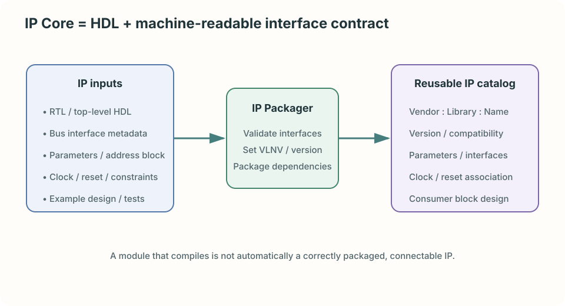
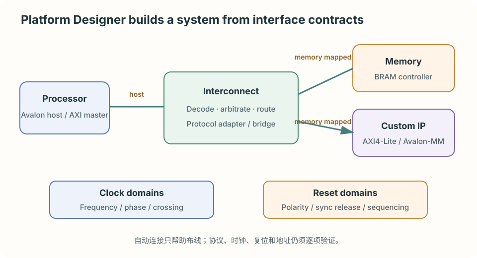
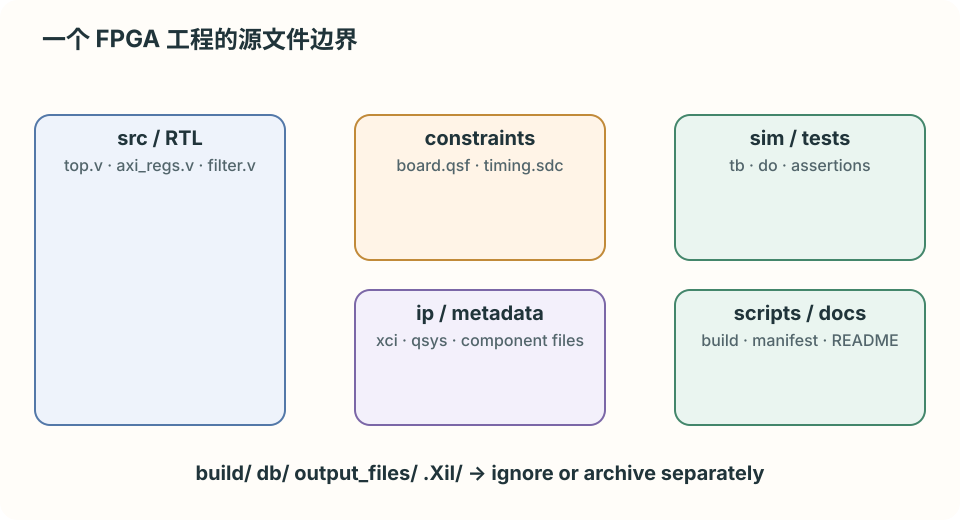

IP Core 与 Platform Designer：接口、封装与可复现集成
从一个 RTL 模块走向可复用 IP：定义接口契约、时钟复位、地址块、版本依赖和系统互连，并建立可追溯的工程输入。
01 / IP Core 不是一个 RTL 文件：它是一份可连接的接口契约
把一个 Verilog module 放进 IP Catalog 并不自动意味着它能正确连接。可复用 IP 至少还需要顶层端口、总线接口类型、信号角色、参数、地址空间、时钟/复位关联、约束、依赖和版本信息。

IP 的可复用边界不是“端口名字看起来相似”，而是机器可识别的接口语义。例如 AXI4-Lite subordinate 必须把 AW、W、B、AR、R 信号归属到正确接口，并把 ACLK/ARESETN 与接口关联；地址空间和寄存器映射也必须与 RTL 行为一致。
在 AMD IP Packager 中，IP 的识别信息采用 Vendor / Library / Name / Version（VLNV）等元数据。一个可编译的 RTL 模块如果没有正确的接口识别和依赖信息，仍可能无法被 IP Integrator 正确实例化或连接。AMD UG1118 · Creating and Packaging Custom IP。
02 / Platform Designer 与 IP Integrator：先定义接口，再建立系统

Altera Platform Designer 支持 Avalon Memory-Mapped、Avalon Streaming、AMBA AXI、AXI-Lite、AXI-Stream 和 APB 等接口；互连逻辑可以在不同接口类型之间插入适配和协议转换。协议转换不是“把几根线连起来”，而是要理解事务顺序、延迟、数据宽度、突发和背压规则。Quartus Prime 26.3 Platform Designer Interconnect 与 接口支持表。
AMD Vivado IP Integrator 是另一套系统集成工具，主要使用 AMD IP Catalog、Block Design、Connection Automation、Address Editor 和 IP Packager。它与 Altera Platform Designer 的文件格式和工具流程不同，但同样依赖机器可识别的接口元数据。
跨接口连接时必须确认：时钟频率/相位是否一致；复位极性和释放时序是否正确；是否需要 clock-crossing bridge；数据宽度和地址宽度是否匹配；读写响应与背压是否保留。自动连接完成后仍需 Validate Design 和 DRC。
03 / 封装自定义 IP：顶层、时钟、复位、参数和版本
以第 19 章的 axi4lite_regs 为例，封装时应把 s_axi_aclk 识别为 AXI 接口时钟，把 s_axi_aresetn 识别为 active-low reset，并将 AW/W/B/AR/R 信号与 AXI4-Lite 从接口关联。还需要定义地址块、寄存器偏移、参数、约束和示例设计。
典型封装检查顺序：
- 确认 top-level HDL 与所有源文件依赖。
- 识别 bus interface 和 signal mapping，避免把响应通道方向声明反。
- 推断/关联 clock 与 reset interface，核对 reset polarity。
- 定义参数范围、地址块、寄存器空间与数据宽度。
- 加入 example design / testbench，并在目标工具版本中验证 IP。
- 设置 VLNV/version，保存兼容性和升级说明。
AMD UG1118 明确覆盖 AXI 信号识别、时钟/复位接口推断、约束处理、IP 升级和版本控制。不要只改 RTL 而不更新打包后的 IP 元数据。时钟与复位接口 · 版本与修订管理。
# IP 变更记录建议
vendor: example.org
library: user
name: axi4lite_regs
version: 1.1
interface: AXI4-Lite subordinate, 32-bit data
register_map: CTRL@0x00, STATUS@0x04, SCRATCH@0x08, ID@0x0C
clock_reset: s_axi_aclk / active-low s_axi_aresetn
compatibility: requires system re-validation after interface changes04 / 工程目录：保存输入，不把缓存误当成 IP 源文件

建议工程结构：
fpga-project/
├── src/ # 手写 RTL
├── sim/ # testbench / Questa .do / assertions
├── constraints/ # QSF / XDC / SDC / pin map
├── ip/ # IP 配置、component metadata、custom IP source
├── software/ # firmware / BSP / linker script
├── scripts/ # create / build / report / manifest
├── reports/ # 经过审查的 sign-off 报告
├── releases/ # 交付元数据和构建校验和
└── fpga-project.yml # part / tool / IP / build contract通常应跟踪 QPF/QSF、SDC/XDC、XPR、XCI、QSYS 或其他实际工程所需的配置文件。生成数据库如 Quartus db/、incremental_db/ 和 Vivado .Xil/、.runs/、IP cache 则通常可以再生。不要使用 *.sdc、*.qsf 或 *.xci 这类宽泛 ignore 规则误删输入。
05 / Build Manifest：将源码、IP、器件和工具版本绑定

本仓库新增 scripts/build_manifest.py，为源文件计算 SHA-256，并记录器件、工具版本与 Git revision：
python3 scripts/build_manifest.py \
--root . \
--output build/manifest.json \
--device "$FPGA_DEVICE" \
--tool-version "$FPGA_TOOL_VERSION" \
--revision "$(git rev-parse HEAD)"Manifest 能帮助回答“这个报告来自哪个提交和哪些源输入”，但不自动锁定工具安装、IP 许可、设备数据库、环境变量、实现种子和所有生成依赖。不能仅凭输入 hash 就承诺不同机器/工具版本一定生成字节完全相同的 bitstream。
06 / IP 升级和工程发布：变更必须重新验证

任何接口变更都可能影响下游 Block Design、Address Editor、驱动和固件。修改 IP 的接口、参数、地址块、clock/reset 关联或依赖版本后，应重新生成 output products、重新验证 block design、检查 DRC/时序，并用系统级 testbench 或硬件回归确认兼容性。
发布标签应绑定 Git commit，并保留工具版本、目标 part、IP VLNV/version、约束摘要、资源/时序报告和文件校验和。不要只把一个 .bit 或 .sof 放进仓库后就称工程可复现。
一个 AXI4-Lite IP 只改了寄存器地址，为什么固件也必须重新构建？
固件使用地址偏移和硬件平台生成的 base-address 宏访问寄存器。地址块或寄存器偏移改变后，驱动代码和生成的硬件描述必须同步更新，否则软件可能访问到错误寄存器。